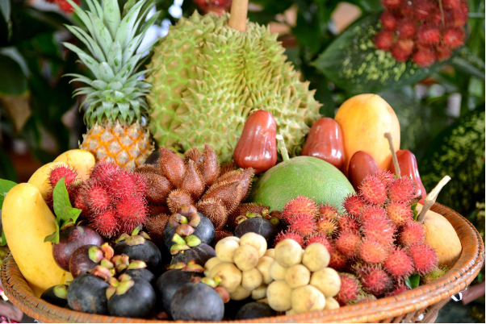

Măng cụt là một loại trái cây hấp dẫn với hương thơm và vị hoàn hảo không thể bỏ qua. Măng cụt vào vụ khoảng từ tháng 4 đến tháng 6 trong năm, là loại quả có chứa rất nhiều vitamin và khoáng chất tốt giúp làm da khỏe mạnh, chống oxy hóa tốt, hạn chế nấm ngứa hay dị ứng.
Bên cạnh đó, trái cây này chứa rất nhiều xanthone có tác dụng chống viêm, ngăn ngừa ung thư.
Mận là một trong những lựa chọn hàng đầu. Mận là loại trái cây vừa ngọt, vừa chua, nhiều nước, được rất nhiều người yêu thích vào mùa hè. Tuy nhiên tháng 4 là đầu mùa nên trái mận còn nho nhỏ, còn non, còn xanh, ăn đậm vị chua và chát.
Hàm lượng vitamin C trong mận giúp ngăn ngừa cholesterol bị oxy hóa trong động mạch ngăn ngừa xơ vữa động mạch, viêm xương khớp. Ngoài ra mận còn giúp cải thiện trí nhớ, hỗ trợ giảm cân và ngăn ngừa ung thư.
Dứa cung cấp một lượng lớn vitamin C, chất chống oxy hóa, chất xơ, mang lại lợi ích tuyệt vời cho sức khỏe như bảo vệ hệ miễn dịch, hệ tiêu hóa, dưỡng ẩm và làm sáng da.
Mangan trong dứa là một khoáng chất quan trọng trong việc tăng cường sự mạnh mẽ, tăng trưởng và phục hồi của xương. Ngoài ra, dứa cũng là một loại quả rất tốt cho mắt, tim mạch và tuần hoàn máu.
Bơ chứa vô vàn chất dinh dưỡng tốt cho da và sức khoẻ. Hơn nữa, bơ còn có thể được chế biến thành rất nhiều món ngon như chè bơ, sinh tố, kem, thạch rau câu…
Đào Sapa vào mùa bắt đầu từ cuối tháng 5 đến hết tháng 6. Nếu sang đến tháng 7, đào Sapa chỉ còn những quả nhỏ. Tháng 5 chính là thời điểm rất tốt để bạn mua đào về thoả sức chế biến và thưởng thức, bởi đào ngon mà lại rất rẻ.
Những quả đào chỉ nhỏ bằng chén uống trà, màu xanh và hồng đỏ đậm, đi cùng độ giòn, mọng nước, vị chua chua đã làm nên thương hiệu đào Sapa Đào ngoài hương vị thơm ngon thì đào rất giàu vitamin A, giúp ngủ sâu, tăng cường trí nhớ, chống oxy cao, làm đẹp da, tốt cho hệ tiêu hoá,...

Sầu riêng được nhiều người yêu thích đặt cho tên gọi “vua của các loại trái cây” do sở hữu mùi thơm mạnh cùng độ ngọt, béo không lẫn vào đâu được. Mặc dù có nhiều ý kiến trái ngược nhau về mùi của thức quả này nhưng nó được ghi nhận chứa hàm lượng protein, glucid, lipid, các chất khoáng và giá trị năng lượng cao hơn hẳn so với các loại trái cây khác.
Khi vào hè, đúng đợt thu hoạch, sầu riêng có giá rẻ hơn nhiều so với mọi khi, có lúc còn rẻ hơn một nửa giá bình thường. Đây chính là lúc bạn và gia đình có thể tận hưởng ngay loại trái cây thú vị này rồi đó!
Vải thiều được trồng ở Lục Ngạn (Bắc Giang) có quả to và hương vị đặc trưng hơn hẳn vải ở những vùng đất khác. Khi chín, vải thiều Lục Ngạn có màu đỏ tươi, hạt nhỏ, cùi dày, mọng nước và ngọt lịm. Không chỉ nổi tiếng trong nước và được xuất khẩu đi nhiều quốc gia như Trung Quốc, Mỹ, Úc,…
Nước dừa ngọt và là thức uống mùa hè được nhiều người ưa thích. Trong thời tiết nóng của mùa hè, thưởng thức một ngụm dừa ngọt, mát lạnh sẽ khiến cho hơi nóng khô trong cơ thể ngay lập tức được thải ra, thật thoải mái.
Dưa hấu được coi là loại quả giải nhiệt cho những ngày hè oi nóng. Dưa hấu là một trong những trái cây mùa hè được yêu thích. Dưa hấu không chỉ ngon mà còn là một “nhà máy” chứa nhiều chất dinh dưỡng.
Dưa hấu có vitamin A, B6 và C, đồng thời còn có đầy đủ các chất chống oxy hoá. Đặc biệt, dưa hấu không chứa chất béo có thể giúp ngăn ngừa các bệnh như đái tháo đường, béo phì và bệnh tim.